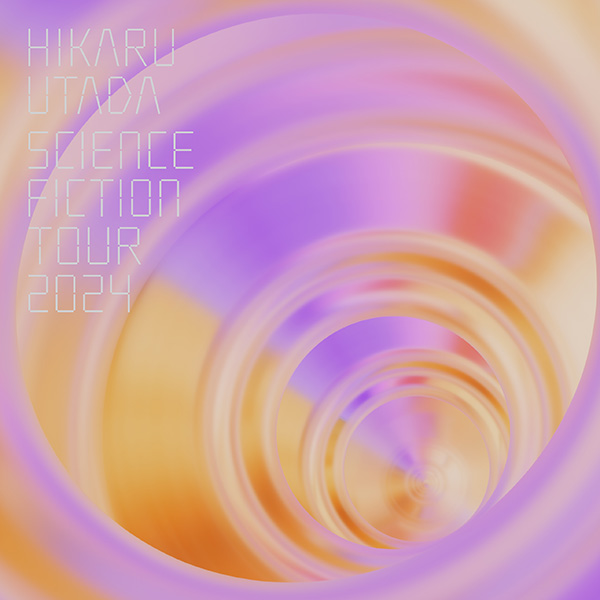

宇多田 ヒカル
D I S C O G R A P H Y
<ディスコグラフィ一覧

2024.12.11 BD
HIKARU UTADA SCIENCE FICTION TOUR 2024
宇多田ヒカル6年ぶり全国ツアー最終公演地Kアリーナのステージを収録
¥7,150税込
【収録内容】
- HIKARU UTADA SCIENCE FICTION TOUR 2024
- 01. time will tell
- 02. Letters
- 03. Wait & See ～リスク～
- 04. In My Room
- 05. 光
- 06. For You
- 07. DISTANCE
- 08. traveling
- 09. First Love
- 10. Beautiful World
- 11. COLORS
- 12. ぼくはくま
- 13. Keep Tryin'
- 14. Kiss & Cry
- 15. 誰かの願いが叶うころ
- 16. BADモード
- 17. あなた
- 18. 花束を君に
- 19. 何色でもない花
- 20. One Last Kiss
- 21. 君に夢中
- 22. Electricity
- 23. Stay Gold
- 24. Automatic
HIKARU UTADA SCIENCE FICTION TOUR 2024 ツアードキュメント映像
デビュー25周年を記念したベストアルバム「SCIENCE FICTION」に連動した全国ツアーの最終公演地であるKアリーナ横浜公演を完全収録。６年ぶりであり、なおかつデビュー以来初めて台北・香港でも公演を行った、まさに25周年の活動をサポートしてくれたファンの方々への感謝を表したいという意図で企画されたツアーは、圧倒的なステージデザインの中でベストアルバムとは趣を変えたベストセットリストを披露。さらには全公演に帯同して収められた貴重なドキュメンタリー映像も収録。